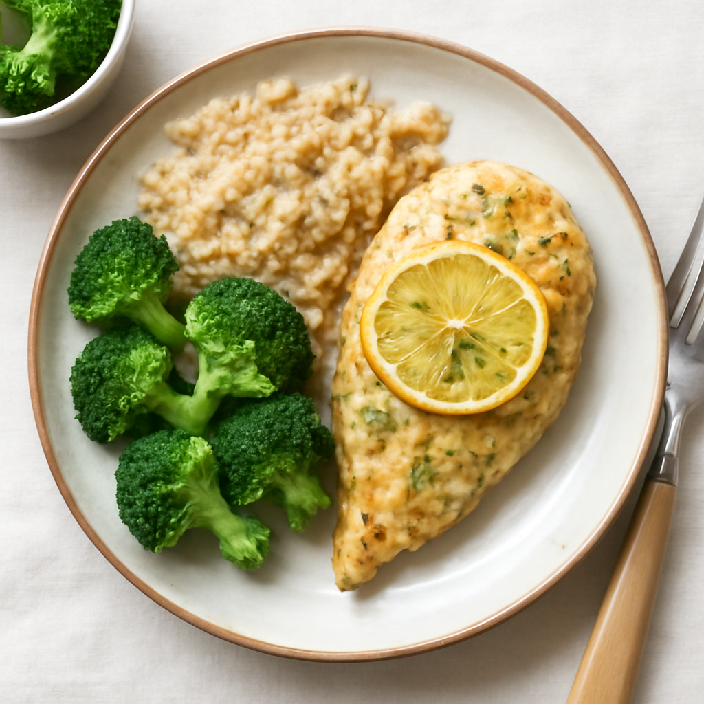

Sunday — Baked Lemon Herb Chicken with Quinoa and Steamed Broccoli

Cook Time:
30 minutes
Method:
Oven
chicken
healthy
quinoa
vegetables
Ingredients for 6
6 chicken breasts
1 cup quinoa
3 cups broccoli florets
2 lemons (juiced)
2 tbsp olive oil
2 tsp dried oregano
2 tsp garlic powder
Salt and pepper to taste
Instructions
Preheat oven to 400°F (200°C).
In a bowl, mix lemon juice, olive oil, oregano, garlic powder, salt, and pepper. Marinate chicken in this mixture for 15 minutes.
Place chicken on a baking tray and bake for 20-25 minutes until cooked through.
Cook quinoa according to package instructions. Steam broccoli until tender, about 5-7 minutes.
Toddler Notes
Cut chicken into small, bite-sized pieces to prevent choking.
Serve quinoa and broccoli in soft bites.
← Back to weekly plan